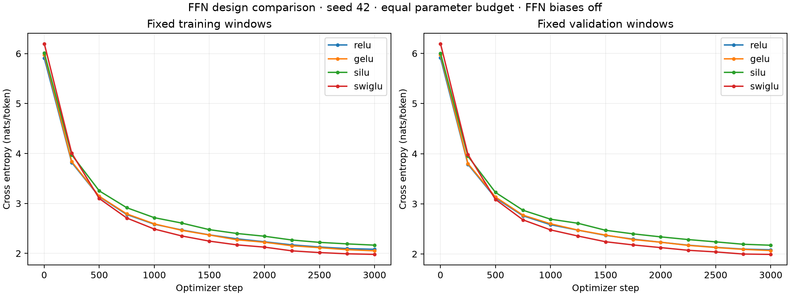

Actual fresh CPU runs: 3000 updates, seed 42. All FFN biases off. Ordinary hidden width 1536; SwiGLU hidden width 1024. Every model has 14,556,288 trainable parameters. Final checkpoint validation losses were independently recomputed and match the CSV records.
| FFN | Train eval | Validation | Δ vs ReLU | Token PPL | Parameters |
|---|---|---|---|---|---|
| relu | 2.08233 | 2.08331 | +0.00000 | 8.031 | 14,556,288 |
| gelu | 2.05152 | 2.06817 | -0.01513 | 7.910 | 14,556,288 |
| silu | 2.16493 | 2.17406 | +0.09075 | 8.794 | 14,556,288 |
| swiglu | 1.97971 | 1.99113 | -0.09218 | 7.324 | 14,556,288 |

Lower cross entropy is better. Deltas describe this one paired seed and do not establish statistical significance. ReLU/GELU/SiLU differ only in the activation. SwiGLU changes the FFN structure and hidden width while preserving its parameter budget; it is not an activation-only ablation. The shared embedding, attention, norms, and output head start with identical weights across all four models. Full FFN initialization matches for the three ordinary activations; differently shaped SwiGLU matrices cannot have identical tensors.
Every run uses the same training-window sequence and fixed evaluation windows. Train-eval and validation each average 20 batches of 4 × 128 positions after an update. They are sampled windows, not full-corpus losses. Training-minibatch losses are recorded separately. AdamW learning rate 0.0003, weight decay 0.01, RoPE on. No scheduler, dropout, clipping, or accumulation. Timing is sequential elapsed time including evaluation and is not a controlled throughput benchmark.
Existing historical runs used a different bias/init protocol and are preserved separately; use this suite's fresh ReLU control for comparisons. Repeated seeds and full-validation evaluation are future work; no such results are claimed.
See protocol.json; source/ for the exact runnable source snapshot; each run's manifest.json, loss.csv, checkpoint.pt, samples.json; summary.csv and verification.json. Checkpoints are local ignored artifacts. The manifest records status completed only after checkpoint and samples are written.
Same three prompts and sampling seed 2026; maximum 100 new tokens, immediate EOS stop, temperature 1. These examples are illustrative, not a quality benchmark.
Once upon a time
Once upon a time, there were going to test. They looked attiiced the slide still to cry it. The patched fireferent off to sleep there life your water. The potoa wanted to be safe never to try about and watch it back.
The little girl found
The little girl found a way and very excited. Max looked at Mia and saw some when it was too little yellow soft! The test prince smiled to see something like this anything. Those the catfectice to try about and waved such adventure, so it worked and slck on her fav
One day, a rabbit
One day, a rabbit named Bob. Lily got up to play. She saw the small slide still to cheerbit so softly and taking polite together. But Lily was angry at once to pap on the wood and she acccidentally waved such adventure, but it was a large noise.
Once upon a time
Once upon a time, there were going to try. He put it in its smally struggult plane. Then the fen taking the cloud to the cars like this anywhere. Bob wanted to do the warm a big smile. She and his friends learned that it's very happy that it's not going. They went to swim
The little girl found
The little girl found a way and stepping into the garden. She saw some whenever he was always so sostOnce! The test proud smiled to see something like this anywhere. Bob wanted to do the warm a big smile. She and his friends learned that it's very happy that it's not going. They went to swim
One day, a rabbit
One day, a rabbit saw a big gray test. It looked like its smally strugguite on the ground. He wanted to have some prince. Jane showed away tire to try and touch the catch. Bobn lived happily ever after. Bob's friends on a glirp and he should have some p
Once upon a time
Once upon a time, there were going to try. He put it to its help. He went back to his carrybite soft! The teen prouds were so clever like this anymore. He had a walp with the water near his tiny sound and wondered while back, glirp and seeping. But,
The little girl found
The little girl found a such of excited. The little paint was happy that help her was strong to cry it up win. The end.
One day, a rabbit
One day, a rabbite suffeant. He put it in its small slown, jumping around in prestals and taking. He was so excited, he saw something like this anymore. He pointed catching late to try about and watched the quocac. Tim lost the shore was very swe
Once upon a time
Once upon a time, there was a very kind girl. She picked up it up and her sistern, but she was alble to helpstratch taking proud. One day, Lily liked to try to eat oat poape. Her pocket would dry some and watch this before solap. Lily learned that her own
The little girl found
The little girl found the way and started growing at itself. The sight still jumped around in the sostratient. His mom was so excited, he could help but he thought for her moments to help him find the wire she a big smile. She and her mom learned that happen on, sometimes they go home and have fun.
One day, a rabbit
One day, a rabbit saw a big game and wanted to be grave. Who helped, he wrote too. He said he was so big that he was taking. He was so excited, he could help his sea. Betty put on a box with the warm anain and stimp and watched the quolasureir around the slide. After.